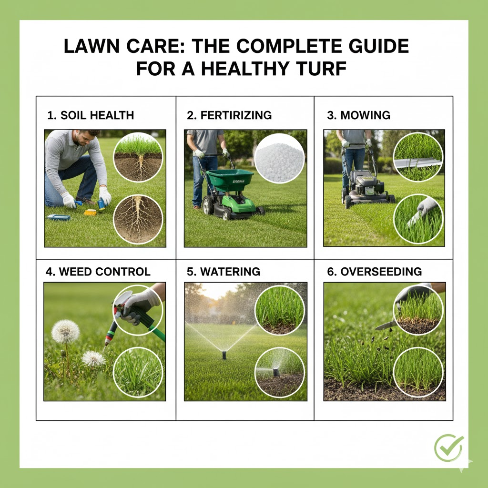
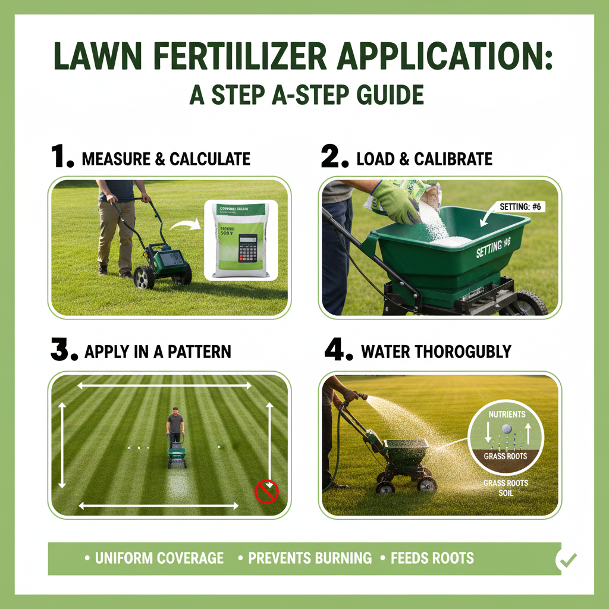

Lawn Care
Lawn care is the science and art of ongoing maintenance, treatment, and cultivation of a grass-covered area (turf) to promote its health, appearance, and vitality over the long term. It involves a set of specific practices aimed at optimizing the condition of the grass and the soil to achieve a dense, vibrant, green, and resilient lawn. While often confused with "lawn maintenance" (the routine tasks), lawn care focuses specifically on the health of the turf and soil, not just the look.
Why is Lawn Care Important?
Environmental, financial, and personal benefits for homeowners and the surrounding community. A well-maintained lawn is a sign of a healthy property and acts as a valuable, living part of the local ecosystem. Here is a breakdown of the core reasons why regular lawn care is essential:
- Boosts Curb Appeal: A lush, green, weed-free lawn creates a positive first impression, significantly enhancing your home's curb appeal.
- Increases Home Value: Studies consistently show that a well-landscaped home can increase the perceived value and sale price of a property by 5% to 28%.
- Reduces Selling Time: Homes with attractive landscaping and a well-maintained yard tend to sell faster, as buyers perceive the property to be well-cared for inside and out.
- Prevents Costly Repairs: Regular care, like aeration and fertilizing, keeps the lawn healthy and dense, preventing widespread disease, pest infestations, and bare spots.
- Creates a Safe Recreational Space: A thick, healthy lawn provides a soft, safe, and clean surface for children, pets, and outdoor recreation.
- Aids Mental Well-being: Being surrounded by green spaces is scientifically linked to reducing stress, lowering blood pressure, and boosting overall mental health.
- Crowds Out Weeds: Proper care creates natural competition that prevents unsightly and invasive weeds from taking hold.

Fertilizer Application
Lawn fertilizer application is the precise process of spreading or spraying nutrient-rich compounds onto your lawn to supplement the soil and provide the essential elements needed for grass health and growth. It is a core component of lawn care, focused on delivering the "food" your grass needs to stay green, thick, and resilient.
Why is Fertilizer Application Important?
The nutrients naturally present in the soil are often not enough to sustain the thick, green, and resilient turf that people desire. Unlike grass in a natural meadow, a well-kept lawn is under constant stress from mowing, foot traffic, and environmental factors. Fertilizer acts as a necessary supplement to replace vital nutrients lost over time:
- The Role of N-P-K: Fertilizers supply the three key macronutrients grass needs in large quantities — Nitrogen (N), Phosphorus (P), and Potassium (K).
- Boosts Turf Resilience and Health: Fertilization improves your lawn's durability, including disease and pest resistance, stress tolerance, and faster recovery.
- Improves Appearance and Density: Proper fertilization produces vibrant green color, thick and dense turf, and natural weed suppression.
- Maintains Soil Quality: Fertilizer helps sustain the growing process by replacing lost nutrients and supporting beneficial soil microorganisms.

Weed Control
Weed control is the practice of stopping or reducing the growth of "weeds" — unwanted plants that compete with your grass, flowers, or crops for essential resources. In a lawn or garden, a weed is simply a plant growing where it isn't wanted. Effective weed control isn't just about killing visible weeds; it's an ongoing strategy to manage the soil and environment so that your desired plants can thrive without competition.
Why is Weed Control Important?
Weed control is about much more than just having a "pretty" yard. When weeds take over, they actively work against the health and survival of your grass and other desired plants. Here is why maintaining control over weeds is a critical part of property management:
- The Battle for Resources: Weeds are naturally aggressive and often grow much faster than turfgrass, stealing nutrients, water, and sunlight from your lawn.
- A Nursery for Pests and Disease: Many common weeds act as host plants for harmful insects and pathogens that can then spread to your grass.
- Impact on Curb Appeal and Property Value: Your lawn is the "frame" for your home — it can add value if properly cared for, or decrease value if left unmanaged.
- Health and Safety Concerns: Certain weeds pose direct risks to people and pets through allergies, toxicity, and trip hazards.